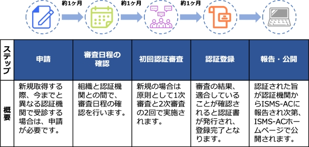
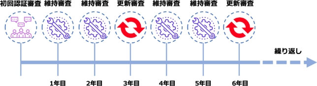

7-2-3. ISMSの実装と認証
ISMSの構築
ISO/IEC 27001に準拠したISMSを実装するには、どのようなステップが必要なのか解説します。実装に際してはISO/IEC 27001の認証審査を受けることになります。そのため、審査対象となるISMSの構築を実施し、実際の運用状況の記録をつけることとなります。
ISMSの構築
ステップ
概要
適用範囲の決定
会社全体だけでなく、特定の部署・拠点のみといったようにISMSの範囲を限定することも可能なため、まずは適用範囲を決定します。
情報セキュリティ方針の策定
ISMSの基本的な指針として、会社の情報セキュリティ方針を策定します。
体制の確立
ISMS管理責任者、ISMS推進事務局、ISMS内部監査チームなど、ISMSの運用体制を決定します。
ISMS文書の作成
ISMSを運用・維持するための手順やガイドラインを文書化します。従業員や関係者が理解しやすく、利用・実践しやすい形式で作成することが重要です。
従業員の教育
ISMSの概要や手順、会社の情報セキュリティ方針について従業員に理解してもらうため、セキュリティ教育を実施します。教育の結果は記録を作成します。
内部監査
ISMSの運用がはじまった後に、定めたルールが適切に運用されているかを確認します。運用が不十分な場合はリスクの指摘やルールの見直しを行い、改善につなげます。内部監査の結果は記録を作成します。
マネジメントレビュー
内部監査の結果をもとに、会社のISMSについての現状や課題、改善点などを経営陣に報告します。マネジメントレビューの結果は記録を作成します。
ISMS認証とISMS適合性評価制度
「ISMS認証」とは、組織の構築したISMSがISO/IEC 27001に基づいて適切に運用管理されているかを、第三者であるISMS認証機関が、利害関係のない公平な立場から審査し証明することです。この認証を公正に運用するために、国際的な枠組みが定められており、これを「ISMS適合性評価制度」と呼んでいます。この適合性評価制度は、以下の図のように「認証機関」「認定機関」「要員認証機関」から構成されています。
ISO/IEC 27001は、 ISMS適合性評価制度において、第三者である認証機関がISMS認証を希望する組織の適合性を評価するための基準となります。
図36. ISMS適合性評価制度
（出典）ISMS-AC「ISMS適合性評価制度」を基に作成
認定と認証
認定
認定機関が認証機関を審査し、認証を遂行する能力のあることを公式に承認する行為を認定と言います。日本におけるISMS適合性評価制度の認定機関は情報マネジメントシステム認定センター（ISMS-AC）です。ISMS-ACは、認証機関が適切に審査を実施できる体制・能力を持っているかを、国際規格に照らして審査し、適合していると認められる機関を認定して、「認定シンボル」の使用を許可しています。そのため、認定を受けたISMS認証機関は、適切なISMS認証審査を実施することのできる、信頼のおける認証機関であることを意味します。
認証
第三者が文書で保証する手続きを認証と言います。
マネジメントシステム規格への適合性を保証する場合、認証の代わりに特に他と区別するため「審査登録」という用語を用いることがあります。この場合、認証の対象は、製品、サービスあるいはプロセスではなく、組織のマネジメントシステムそのものとなることに注意が必要です。
（出典）MSQA「ISMS推進マニュアル - 活用ガイドブック ISO/IEC 27001:2022 対応1.0版」を基に作成
ISMS認証審査プロセス
ISMSの認証審査は、大まかに以下のようなステップで進みます。
なお、審査に要する期間や工数、申請方法、申請時の準備物、認証登録料金などは、認証機関によって異なります。 ISMS認証機関は、情報マネジメントシステム認定センター（ISMS-AC）のホームページで公開されているため、申請先の選定の際は確認することが大切です。
ISMS認証の維持および更新審査プロセス
ISMS認証取得後も、維持・更新のための審査があります。年に1回以上の維持審査（サーベイランス審査）と、3年ごとに認証の有効期限を更新するための更新審査です。どちらにおいても、組織のISMSが引き続き規格に適合し、有効に維持されているかが確認されます。
